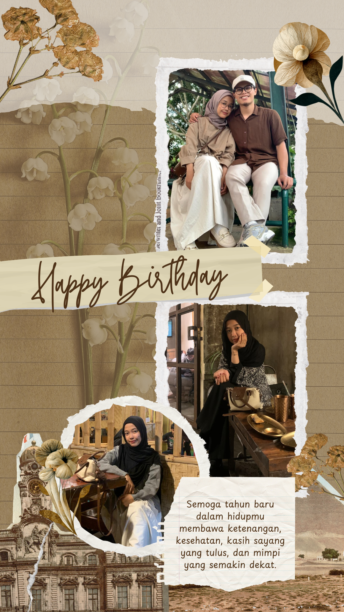
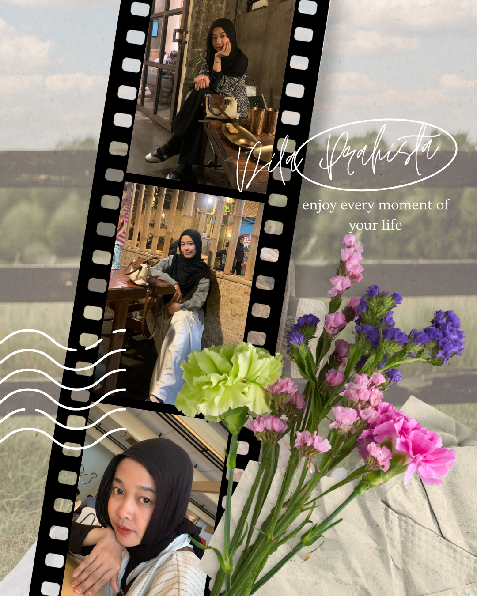
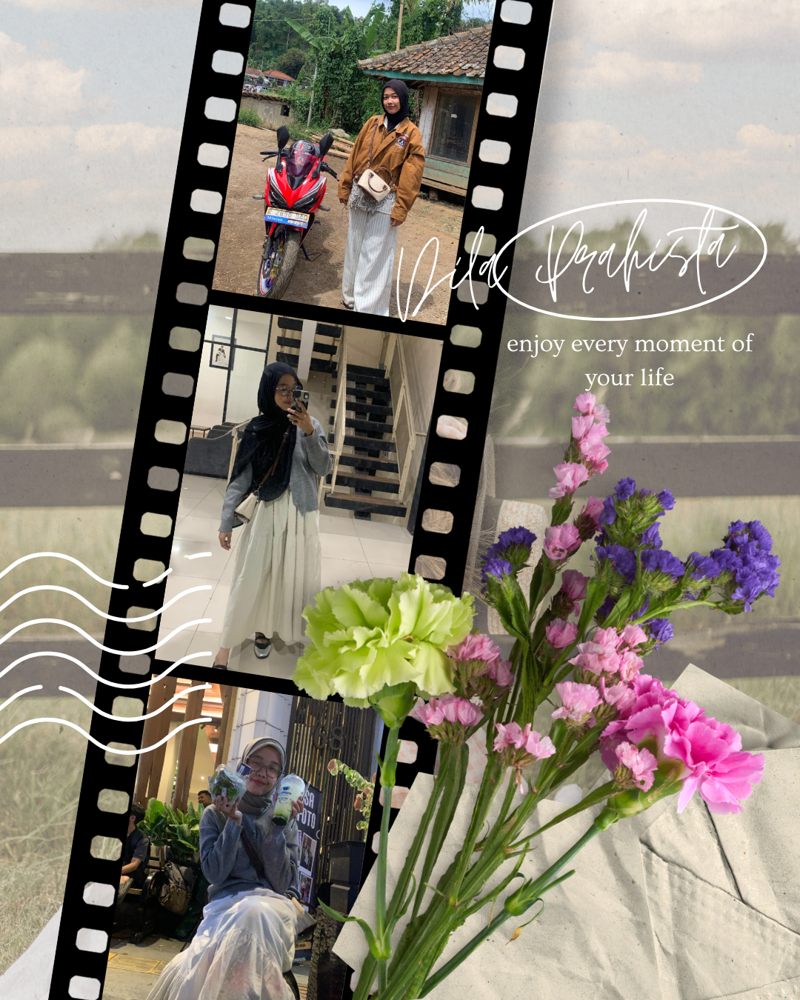

halaman pertama
Buku kecil untuk ulang tahun
Scrapbook ini menyimpan satu tahun kenangan dalam kertas hangat, foto-foto kecil, doa-doa sederhana, dan halaman yang dibuat khusus untuk Dila Prahista.
Tanggal ulang tahun
Rabu, 27 Mei 2026
Untuk hari ini
27
Mei 2026
pilih satu kado
Kado kecil untuk hari ini
Ini cuma permainan kecil, tapi setiap kado menyimpan doa baik untuk Dila.
halaman kenangan 1
Halaman Foto Pertama

halaman kenangan 2
Halaman Foto Kedua

halaman kenangan 3
Video Kenangan
surat kecil
Surat untuk Dila
Terima kasih sudah hadir dan menjadi bagian dari banyak cerita indah. Tekan tombol di bawah untuk membaca pesan spesial ini.
Untuk Dila Prahista,
Selamat ulang tahun, Dila Prahista. Terima kasih sudah hadir, sudah menjadi seseorang yang hangat, dan sudah menjadi bagian dari satu tahun yang layak dikenang dengan baik. Semoga hari ulang tahunmu terasa lembut, istimewa, dan penuh dengan kasih sayang yang tidak perlu selalu ramai untuk terasa nyata. Nanti isi surat ini bisa diganti sepenuhnya dengan ucapan panjang yang ingin kamu berikan untuk Dila.
Dengan doa dan rasa hangat.
doa dan harapan
Harapan Kecil
Semoga Allah memberkahi umurmu, menjaga hatimu, dan membimbing setiap langkah baik yang kamu ambil.
Doa
Semoga tahun baru dalam hidupmu membawa ketenangan, kesehatan, kasih sayang yang tulus, dan mimpi yang semakin dekat.
Harapan
Semoga kamu selalu dikelilingi orang-orang yang menghargai senyummu dan peduli pada bahagiamu.
Ucapan
Semoga setiap bab setelah ulang tahun ini terasa lebih lembut, lebih terang, dan lebih dekat dengan semua yang kamu doakan.
Untuk Dila

.jpeg)


10.1 MEGA PIXELS